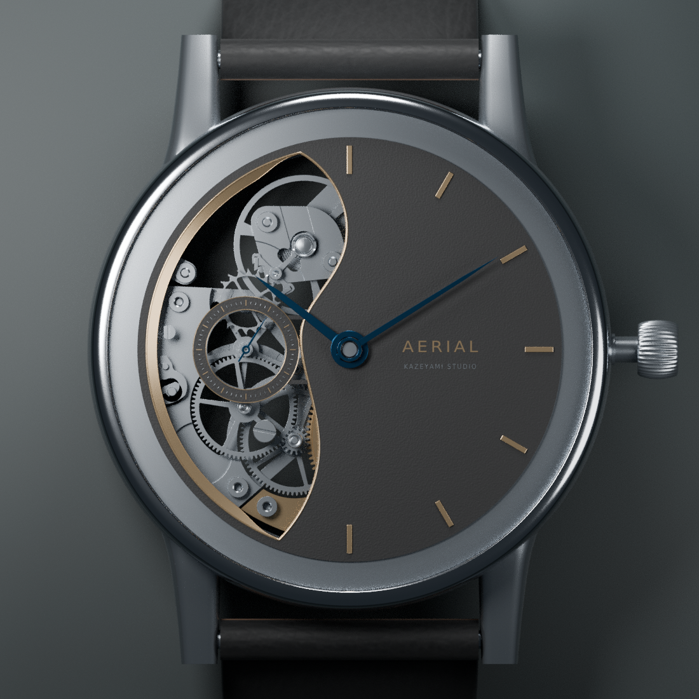

01 / MECHANICAL OBJECTS
AerialLeft Crescent
Explore the case, movement
and mechanics of Aerial.
Layout study · static watch preview
AERIAL / 01FORM. MATERIAL. MECHANISM.
INTERACTION CONCEPT
01
Pull the crownDrag outward to enter time setting.
02
Turn. Then push back in.Drag to turn; push inward to finish.
Planned keyboard alternative: Enter to engage, ← → to turn.
Motion prototype
Drag to orbit · Scroll to zoomOne finger to orbit · Pinch to zoomArrow keys to orbit · + / − to zoomPlanned 3D gestures — static in this study